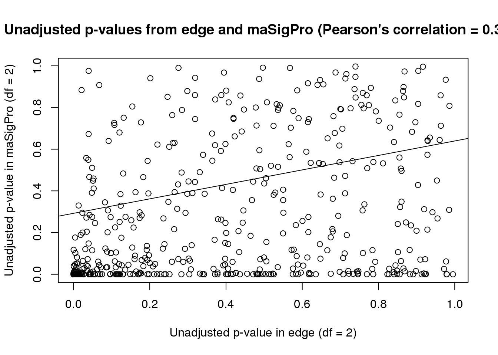
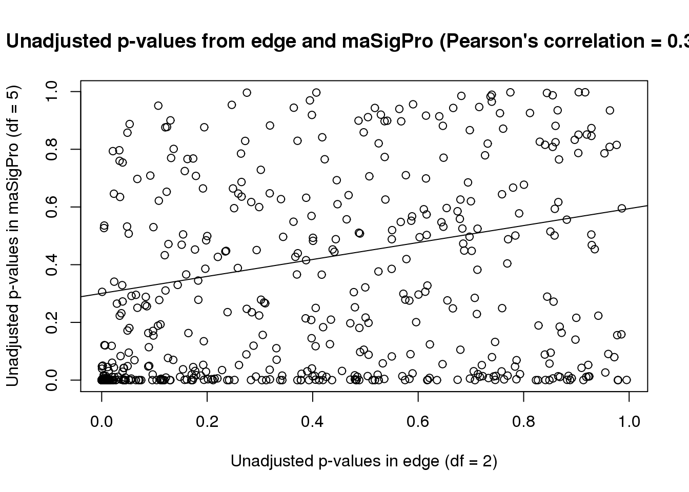

Example_time_series_example_comparison
- Compare unadjusted p-values from edge and maSigPro (df= 2)
- Compare unadjusted p-values from edge and maSigPro (df= 5)
- Compare Benjamini-Hotchberg corrected p-values from the two software programs
- Compare the number of genes at FDR 1% and FDR 10% for both software programs
- Compare the number of DE genes
- Compare the p-values and q-values of the genes that were statistically significant in both programs
The goal of this section is to compare the results from edge (df = 2) and maSigPro (df = 2) for the endotoxin data.
# Load libraries
library("Hmisc")## Loading required package: lattice## Loading required package: survival## Loading required package: Formula## Loading required package: ggplot2##
## Attaching package: 'Hmisc'## The following objects are masked from 'package:base':
##
## format.pval, round.POSIXt, trunc.POSIXt, unitslibrary("formattable")
# Load data
# p-values from edge
p_value_endo_genes_edge_data <- read.csv("~/diffTimeExpression/data/p_value_endo_genes_edge_data.txt", sep="")
# p-values from maSigPro (df = 2)
p_value_maSigPro_df_2 <- read.csv("~/diffTimeExpression/data/p_value_maSigPro_df_2.txt", sep="")
# p-values from maSigPro (df = 5)
p_value_maSigPro_df_5 <- read.csv("~/diffTimeExpression/data/p_value_maSigPro_df_5.txt", sep="")Compare unadjusted p-values from edge and maSigPro (df= 2)
# Combine the two lists of unadjusted p-values into one data frame
unadjust_p_value <- as.data.frame(cbind(p_value_endo_genes_edge_data, p_value_maSigPro_df_2))
colnames(unadjust_p_value) <- c("Unadjusted p-value in edge (df = 2)", "Unadjusted p-value in maSigPro (df = 2)")
# Find the correlation between the two numbers
rc <- rcorr(as.matrix(unadjust_p_value), type="pearson") # Correlation = 0.3766195 and p = approximately 0
flattenCorrMatrix <- function(cormat, pmat) {
ut <- upper.tri(cormat)
data.frame(
row = rownames(cormat)[row(cormat)[ut]],
column = rownames(cormat)[col(cormat)[ut]],
cor =(cormat)[ut],
p = pmat[ut]
)
}
flattenCorrMatrix(rc$r, rc$P)## row
## 1 Unadjusted p-value in edge (df = 2)
## column cor p
## 1 Unadjusted p-value in maSigPro (df = 2) 0.3511001 4.440892e-16# Compare unadjusted p-values from edge and maSigPro
plot(unadjust_p_value, main = "Unadjusted p-values from edge and maSigPro (Pearson's correlation = 0.377)")
# Make a best fit line (which we can then add to the plot)
abline(lm(unadjust_p_value[,1] ~ unadjust_p_value[,2]))
From this plot, it appears that edge is more conservative than maSigPro when df = 2.
Compare unadjusted p-values from edge and maSigPro (df= 5)
# Combine the two lists of unadjusted p-values into one data frame
unadjust_p_value <- as.data.frame(cbind(p_value_endo_genes_edge_data, p_value_maSigPro_df_5))
colnames(unadjust_p_value) <- c("Unadjusted p-values in edge (df = 2)", "Unadjusted p-values in maSigPro (df = 5)")
# Find the correlation between the two numbers
rc <- rcorr(as.matrix(unadjust_p_value), type="pearson") # Correlation = 0.3235 and p = 1.203482e-13
flattenCorrMatrix(rc$r, rc$P)## row
## 1 Unadjusted p-values in edge (df = 2)
## column cor p
## 1 Unadjusted p-values in maSigPro (df = 5) 0.3078247 1.956657e-12# Compare unadjusted p-values from edge and maSigPro
plot(unadjust_p_value, main = "Unadjusted p-values from edge and maSigPro (Pearson's correlation = 0.324)")
# Make a best fit line (which we can then add to the plot)
abline(lm(unadjust_p_value[,1] ~ unadjust_p_value[,2]))
The correlation for unadjusted p-values is higher in edge and maSigPro when df = 2 in maSigPro
Compare Benjamini-Hotchberg corrected p-values from the two software programs
# Make Benjamini-Hotchberg correction for each set of the unadjusted p-values
edge_fdr <- p.adjust(as.matrix(p_value_endo_genes_edge_data), method = "fdr", n = 500)
summary(edge_fdr)## Min. 1st Qu. Median Mean 3rd Qu. Max.
## 0.001667 0.338500 0.731800 0.590800 0.871500 0.995300maSigPro_fdr <- p.adjust(as.matrix(p_value_maSigPro_df_2), method = "fdr", n = 500)
summary(maSigPro_fdr)## Min. 1st Qu. Median Mean 3rd Qu. Max.
## 0.00000 0.00473 0.21460 0.34890 0.67860 0.99660# Combine the two lists of adjusted p-values into one data frame
adjusted_p_value <- as.data.frame(cbind(edge_fdr, maSigPro_fdr))
colnames(adjusted_p_value) <- c("BH adjusted p-values in edge (df = 2)", "BH adjusted p-values in maSigPro (df = 2)")
# Find the correlation between the two numbers
rc <- rcorr(as.matrix(adjusted_p_value), type="pearson") # Correlation = 0.4421 and p equals approximately 0
flattenCorrMatrix(rc$r, rc$P)## row
## 1 BH adjusted p-values in edge (df = 2)
## column cor p
## 1 BH adjusted p-values in maSigPro (df = 2) 0.4093033 0# Compare unadjusted p-values from edge and maSigPro
plot(adjusted_p_value, main = "BH adjusted p-values from edge and maSigPro (Pearson's corr. = 0.4421)")
# Make a best fit line (which we can then add to the plot)
abline(lm(adjusted_p_value[,1] ~ adjusted_p_value[,2]))
Compare the number of genes at FDR 1% and FDR 10% for both software programs
# Find the number of significant genes at FDR 1%
length(edge_fdr[edge_fdr<=0.01]) # 10 genes## [1] 20length(maSigPro_fdr[maSigPro_fdr<=0.01]) #135 genes## [1] 135# Find overlap
overlap_0.01 <- adjusted_p_value[adjusted_p_value[,1] <= 0.01 & adjusted_p_value[,2] <= 0.01, ]
nrow(overlap_0.01)## [1] 18# Find the number of significant genes at FDR 10%
length(edge_fdr[edge_fdr<=0.1]) #61 genes## [1] 61length(maSigPro_fdr[maSigPro_fdr<=0.1]) # 196 genes## [1] 196overlap_0.1 <- adjusted_p_value[adjusted_p_value[,1] <= 0.1 & adjusted_p_value[,2] <= 0.1, ]
nrow(overlap_0.1)## [1] 54# Make a table of the results
DF <- data.frame(Program=c("edge", "maSigPro", "Genes in common"), FDR_0.01=c("10", "135", "10"), FDR_0.1=c("61", "196", "55"))
formattable(DF)| Program | FDR_0.01 | FDR_0.1 |
|---|---|---|
| edge | 10 | 61 |
| maSigPro | 135 | 196 |
| Genes in common | 10 | 55 |